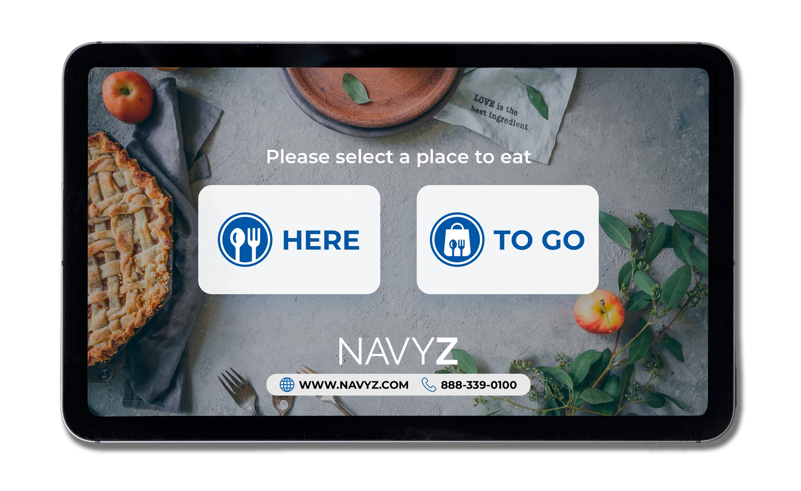
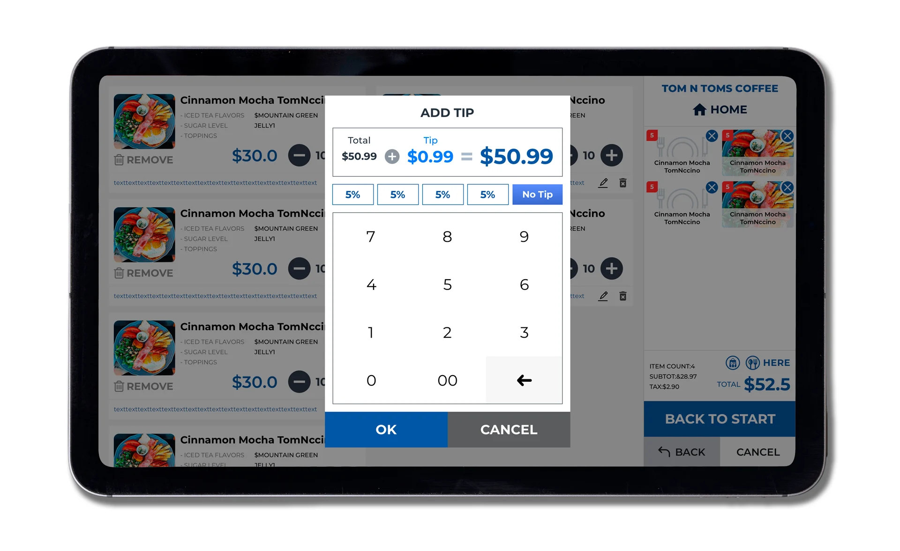
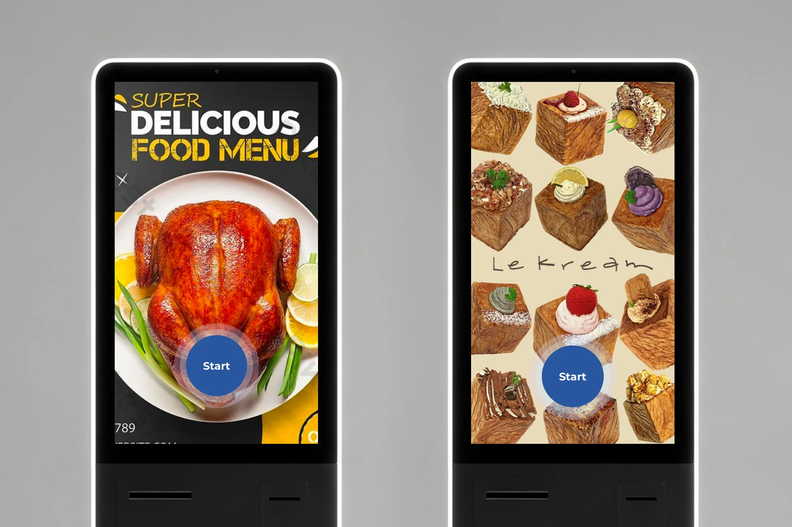
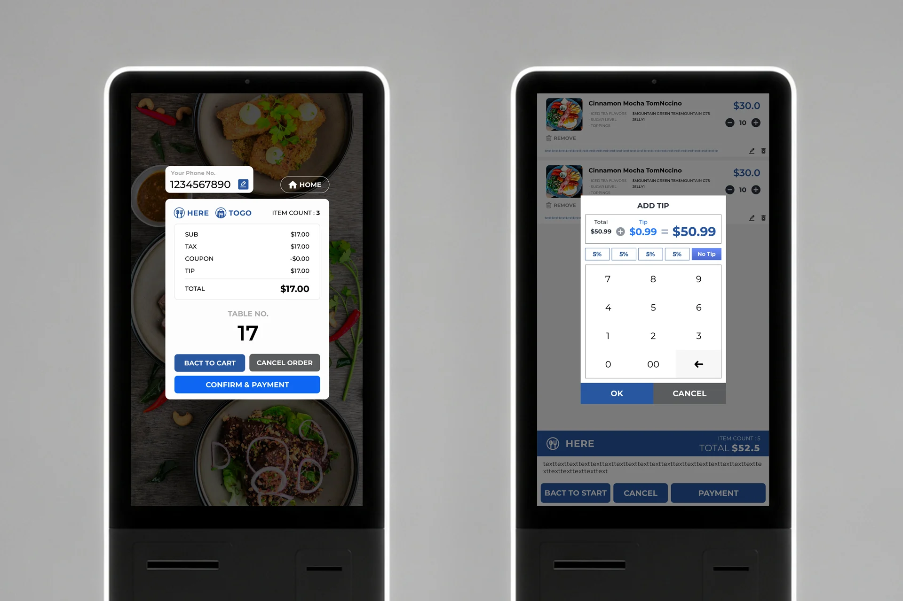

KIOSK SYSTEM
12종 템플릿이 이미 운영 중이던 키오스크 시스템에 합류해, 유지보수와 신규 페이지, 타입별 컬러 배리에이션을 담당했습니다.
Overview
프랜차이즈 매장에 설치되는 셀프 주문 키오스크. 제가 합류한 시점에 이미 12종 템플릿이 운영 중이었고, 브랜드마다 다른 타입이 적용되어 있었습니다.
My Role
기존 시스템의 유지보수를 맡아 신규 페이지를 만들고, 타입별 컬러 배리에이션을 작업했습니다.
Build
인트로 · 매장/포장 선택 · 메뉴 목록 · 메뉴 상세 · 장바구니 · 테이블 번호 · 진동벨 · 팁 · 쿠폰 · 결제 · 영수증. 가로 · 세로 · 모바일 세 가지 화면으로 각각.
Stack
- HTML
- CSS
- jQuery
- ASP
Screens




Demo
터치하면 버튼이 눌리는 효과
구형 브라우저 대응
화면 안에 뜨는 가상 키보드
메뉴 목록 터치 스크롤
옵션 선택 (체크박스 · 라디오)
타입별 컬러 배리에이션
코딩
디자인 협업